Biography
Grace Hartigan, (born March 28, 1922, Newark, N.J., U.S.—died Nov. 15, 2008, Baltimore, MD.), an American painter best known for her Abstract Expressionist works of the 1950s, which gradually incorporated recognizable imagery. Her later paintings were sometimes identified with Pop art despite her distaste for that style.
Hartigan was a latecomer to art, coaxed into taking night school lessons by her first husband after they wound up in Los Angeles—she was pregnant; they were broke—after a cross-country journey intended to take them to Alaska. Back in New Jersey while her husband (whom she divorced in 1947) served in the Army, she took lessons from a local painter and moved with him to New York. She became intrigued by Abstract Expressionism after seeing Jackson Pollock’s drip paintings at the Betty Parsons Gallery. (Her 1949 wedding to artist Harry Jackson, annulled in 1953, took place at the home of Pollock and his wife, painter Lee Krasner.) Willem de Kooning became her informal mentor, and she soon became a fixture at the downtown artists’ two hangouts, the Club and the Cedar Tavern.
Hartigan’s career was launched in 1950 when one of her paintings was selected by Clement Greenberg and Meyer Schapiro for the "New Talent" show at the Kootz Gallery. The following year, she had her first solo show, at the Tibor de Nagy Gallery. Feeling that she needed to work in a more personal style, less indebted to Abstract Expressionism, she became increasingly influenced by Velázquez, Goya, and other Old Master painters. She also drew inspiration from the works of Paul Cézanne and Henri Matisse. Although many of her fellow artists criticized this new direction, her 1952 painting The Persian Jacket was purchased for the permanent collection of the Museum of Modern Art. A close friend of the poet Frank O’Hara, she collaborated with him on Oranges, a suite of figurative paintings that incorporate passages from his 1949 poem series.
Other major museum purchases followed: the Museum of Modern Art bought the Matisse-influenced River Bathers (1953); the Whitney Museum bought Grand Street Brides (1954), based on the shop windows of bridal gowns in the Lower East Side, where Hartigan lived in an unheated loft. In 1956, Hartigan began what became a series of "City Life" paintings, which combine interlocking planes of color with imagery that reflected the street scenes of her neighborhood. That year, she was the only woman represented in the groundbreaking exhibition, "Twelve Americans," at the Museum of Modern Art. In 1958, she was the youngest artist and only woman in the museum’s exhibition, "The New American Painting," which traveled to eight cities in Europe.
After the annulment of a brief third marriage, Hartigan wed her fourth husband, an epidemiologist at Johns Hopkins University, which entailed a move to Baltimore in 1961. At first, bitterly regretting her departure from the New York art world, she tried to replicate her old studio environment by working in an abandoned factory building. Billboard (1957) marked the introduction of pop culture imagery into her paintings. In the early 1960s, her work reflected her fascination with the death of Marilyn Monroe and the launch of the Barbie doll. During the following decades, Hartigan looked to paper doll books of historical figures and movie actresses in her constant search for subject matter to paint.
In 1964, she began teaching part-time at the newly founded Hoffberger School of Painting, a graduate program at the Maryland Institute College of Art. Known for her merciless student critiques, Hartigan—who became director of the school the following year—stressed expressivity above all. Although plagued by ill health (she was a recovering alcoholic and had osteoarthritis), she refused to retire.
In the 1980s, her early work was included in two major museum shows, "Action/Precision: The New Direction in New York, 1955–60" and "The Figurative Fifties: New York Figurative Expressionism." Her last major group exhibition was "Hand-Painted Pop: American Art in Transition, 1955–62," shown in leading museums in Los Angeles, Chicago, and New York.
The Journals of Grace Hartigan, 1951–1955, (2009) constitute a remarkable document, revealing Hartigan’s personal and financial concerns, and her day-to-day struggles with her painting.

 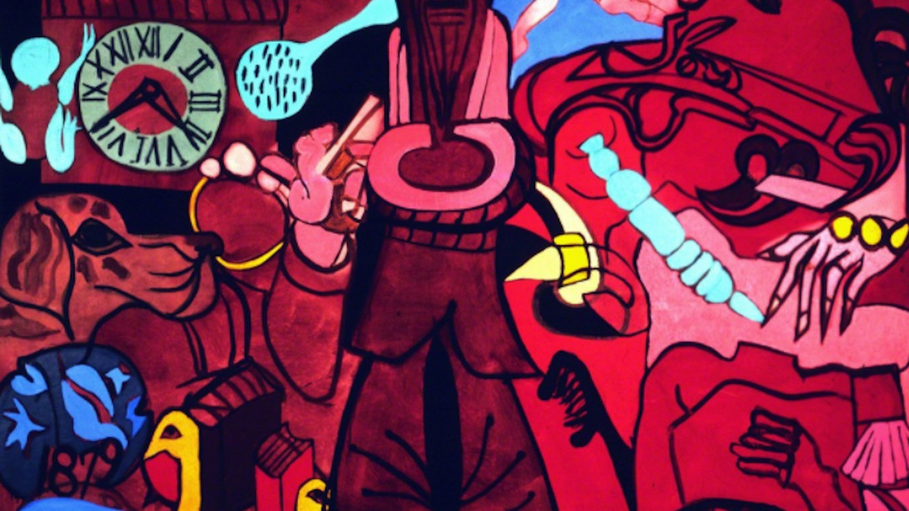
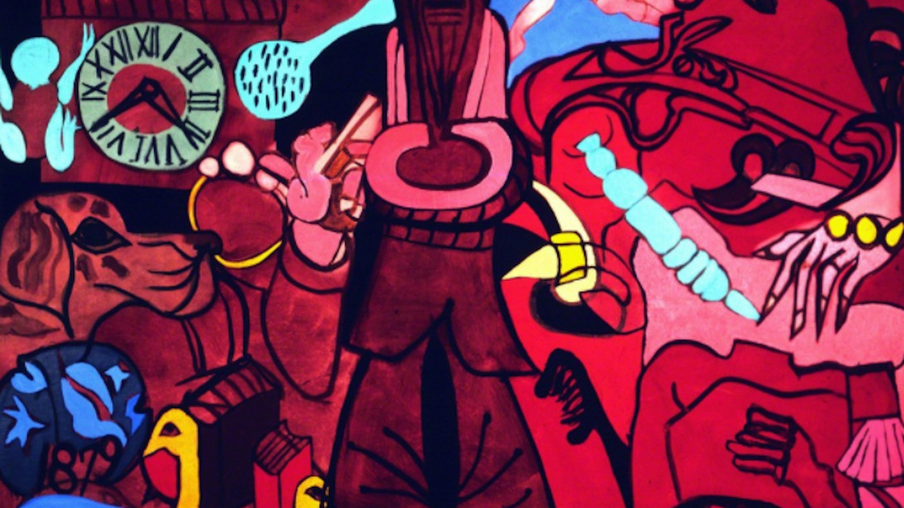
 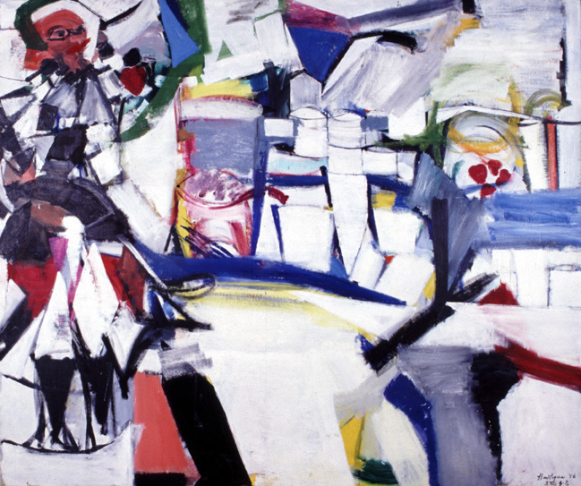
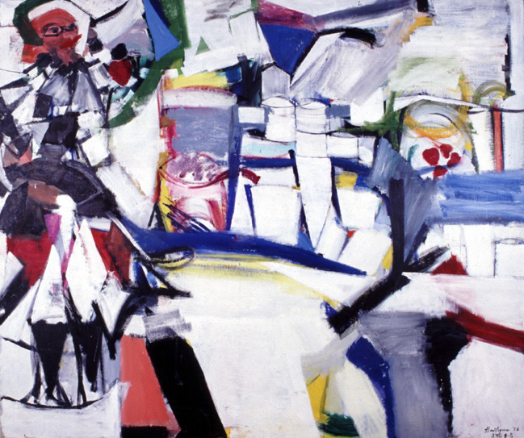


 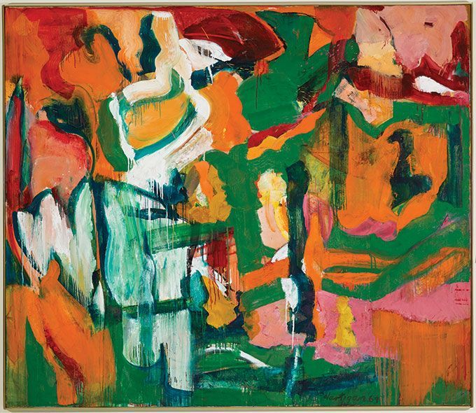
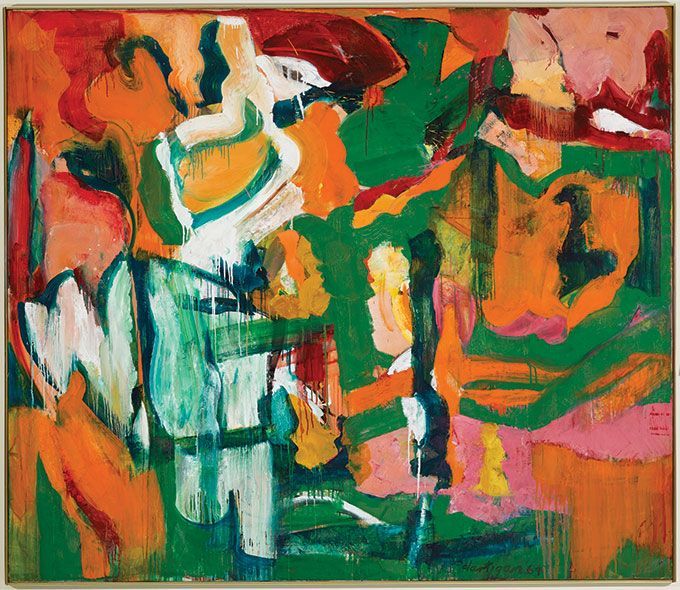


 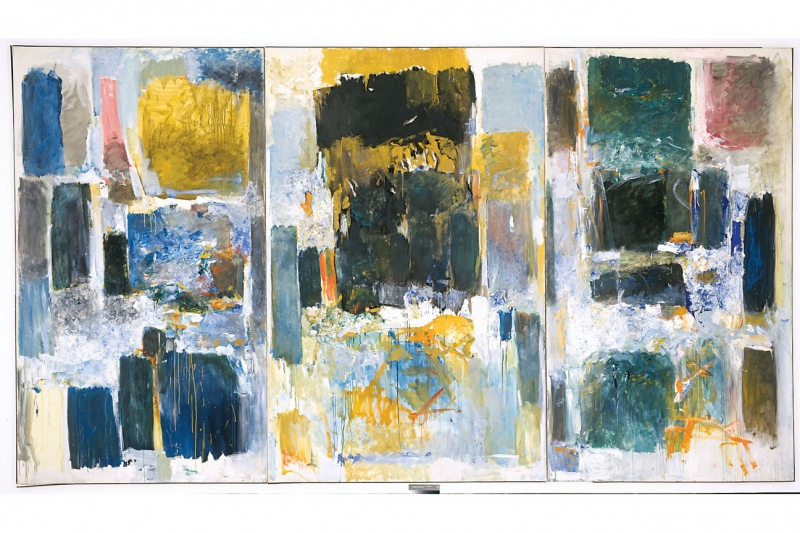
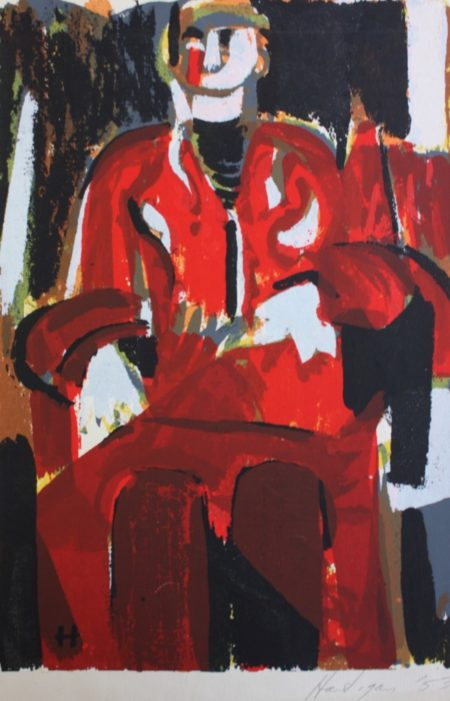
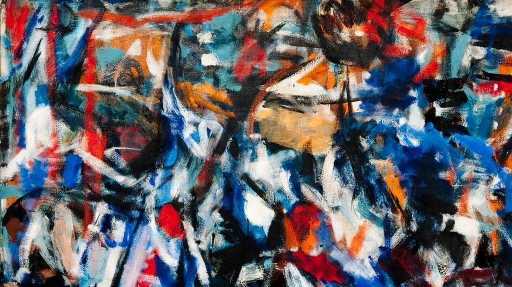
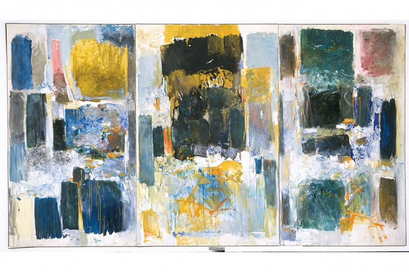
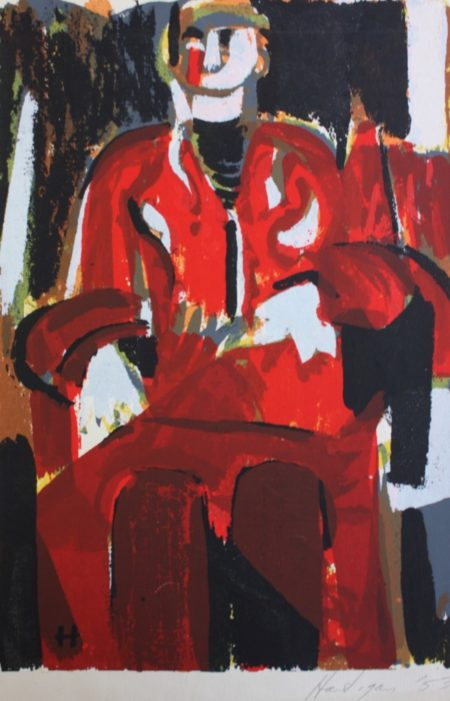
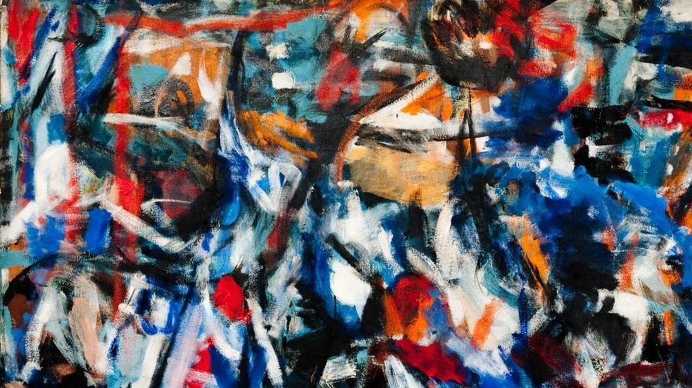


 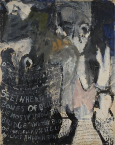
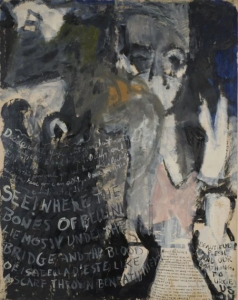


 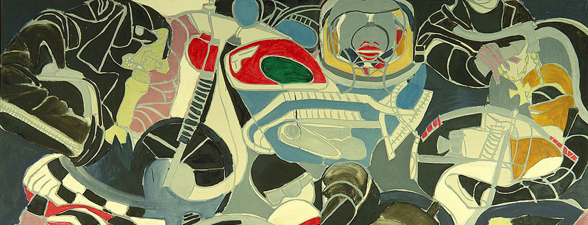
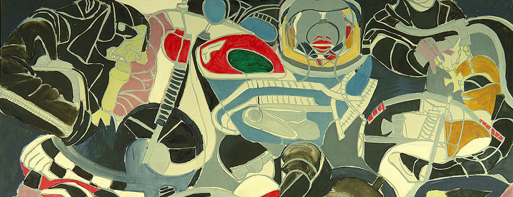